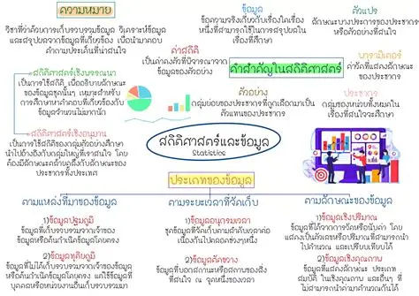

สถิติศาสตร์และข้อมูล

สถิติศาสตร์และข้อมูลเป็นเนื้อหาที่เกี่ยวข้องกับการเก็บรวบรวม การจัดระเบียบ การวิเคราะห์ และการนำเสนอข้อมูล ข้อมูลที่ได้จากการสำรวจหรือการทดลองสามารถนำมาวิเคราะห์เพื่อหาข้อสรุปและใช้ประกอบการตัดสินใจได้ การวิเคราะห์ข้อมูลทางสถิติมีวิธีการหลายรูปแบบ เช่น การหาค่าเฉลี่ยเลขคณิต มัธยฐาน ฐานนิยม พิสัย และส่วนเบี่ยงเบนมาตรฐาน นอกจากนี้ยังสามารถนำเสนอข้อมูลด้วยตาราง แผนภูมิแท่ง แผนภูมิวงกลม และกราฟต่าง ๆ เพื่อช่วยให้เข้าใจข้อมูลได้ง่ายขึ้น สถิติศาสตร์มีความสำคัญต่อการดำเนินชีวิตและการทำงาน เพราะสามารถนำข้อมูลที่มีอยู่มาใช้ในการวิเคราะห์และเปรียบเทียบ รวมถึงช่วยให้สามารถมองเห็นแนวโน้มของข้อมูลและตัดสินใจได้อย่างมีเหตุผลมากขึ้น